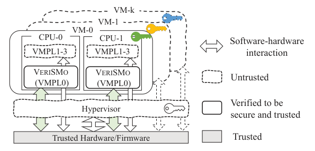
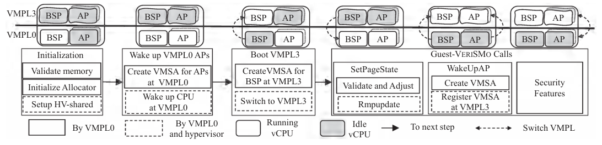
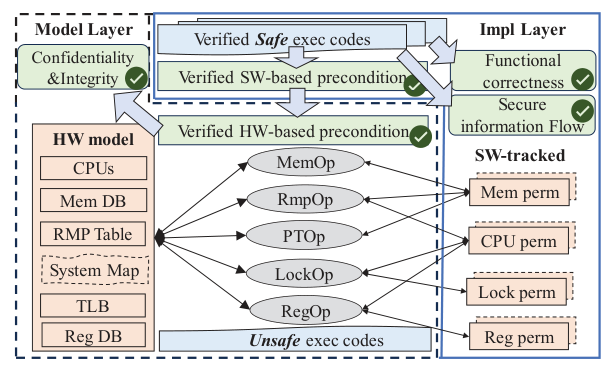
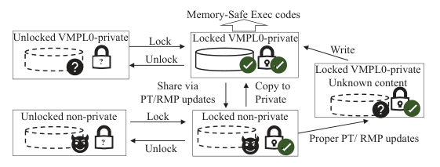
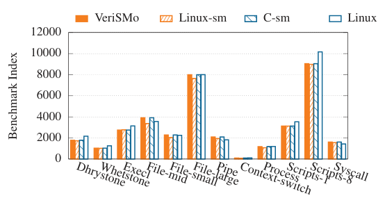
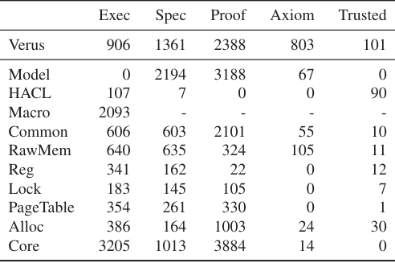

VeriSMo: A Verified Security Module for Confidential VMs
This page was written by an AI model to give a high-level overview of the paper. Please check the paper for detail: USENIX.
Confidential VM architectures such as AMD SEV-SNP, Intel TDX and Arm CCA remove the hypervisor from a VM's trusted computing base (TCB) by encrypting the VM's memory and tracking page ownership in hardware. That protection has a cost: services the hypervisor used to provide to a VM, such as waking up additional virtual CPUs, validating newly assigned memory, taking runtime measurements, or managing secrets, are no longer things the VM can safely ask an untrusted hypervisor to do. Security modules such as AMD's Secure VM Service Module (SVSM) fill this gap: a small, highly privileged software layer that runs inside the confidential VM itself and reimplements these services. Because the module is as security critical as the hypervisor it replaces, AMD and others write it in Rust for its memory-safety guarantees.
Rust's safety only goes so far. Touching hardware registers, page tables and AMD's Reverse Map Table (RMP) requires unsafe code the compiler does not check, and a module that talks directly to confidential-VM hardware is full of it: COCONUT-SVSM uses 235 unsafe blocks and AMD SVSM uses 150. Testing those blocks shows the module works on the cases it is given; it cannot prove the module is correct, and it is exactly these unsafe, hardware-facing paths where a mistake breaks confidentiality or integrity. The deeper obstacle to proving correctness is that the module's state is not sequential: an untrusted hypervisor can interrupt its execution and change hardware state, such as the RMP or the nested page table, at any point, and the module is itself a concurrent program running on multiple CPUs. Standard Floyd-Hoare verification, which reasons about one thread running without outside interference, fits neither kind of concurrency.
VeriSMo is the first formally verified security module for confidential VMs, targeting AMD SEV-SNP and verified end to end with Verus, a verification tool for Rust. Its key move is to split verification into two layers that each handle one source of concurrency. A machine-model layer defines an abstract model of the SEV-SNP hardware (registers, memory, page tables, the RMP) and the entities that act on it (VeriSMo, the guest OS, the hypervisor), and proves that no sequence of hypervisor- or guest-driven hardware operations can violate the confidentiality or integrity of VeriSMo's or the VM's private memory. An implementation layer then verifies VeriSMo's actual Rust code, using Rust's ownership checking together with Verus's permission system to reason about VeriSMo's own concurrent accesses to memory, locks and registers across CPUs. The two layers meet at explicit preconditions VeriSMo's code must satisfy before a hardware operation, checked at the implementation layer, and postconditions it may assume afterward, proved sound at the machine-model layer.
VeriSMo runs at the highest privilege level, VMPL0, while the guest OS runs at VMPL3 under restricted interrupts, so a malicious hypervisor can inject only one generic interrupt type (#HV) and cannot hijack control flow. The guest OS calls into VeriSMo through hypercalls and a shared per-CPU page for services it cannot perform itself: waking application processors, validating and sharing memory pages, locking down kernel code pages against further writes, extending and attesting a measurement hash chain, and deriving keys to encrypt or decrypt secrets. Every hardware primitive VeriSMo uses (pvalidate, rmpadjust, page table and register writes) is wrapped in a trusted function with a Verus-checked precondition and postcondition; VeriSMo represents memory, locks and registers as Verus tracked permissions so Rust's own borrow checker enforces that only one entity validly accesses a resource at a time, and it adds a security-type system that tracks, for each variable, the set of values any given entity could guess it holds, so secret keys and measurements cannot leak through data or control flow.
VeriSMo is built mostly from scratch, trusting only a formally verified cryptographic library (HACL*) and 32 unsafe Rust blocks, versus 150 in AMD SVSM and 235 in COCONUT-SVSM. The full proof takes about 6 minutes on a 32-core machine. On a 32-core AMD EPYC 7543P server running Hyper-V, VeriSMo's guest-callable APIs cost tens of microseconds for most operations; a guest Linux kernel running under VeriSMo shows close to zero UnixBench overhead, compared with up to 40% for a similarly privileged but unverified module (Hecate); and verifying VeriSMo caught a confidentiality bug in its own early page-sharing logic, a bug AMD's own unverified SVSM also carried and fixed only after the authors reported it in May 2023.

Key takeaways
- VeriSMo is the first formally verified security module for a confidential VM (AMD SEV-SNP), proving functional correctness, secure information flow, and VM confidentiality and integrity.
- Two-layer verification separates hypervisor-driven concurrency (machine-model layer) from VeriSMo's own CPU-to-CPU concurrency (implementation layer), connected by explicit hardware pre/postconditions.
- The implementation layer uses Verus's permission system (tracked variables) on top of Rust ownership to make memory, lock and register accesses safe under concurrency, plus a security-type system that tracks a per-entity "guessable value set" to prevent secret leakage.
- Verification is efficient (about 6 minutes on 32 cores) and caught a real confidentiality bug that AMD's unverified SVSM also carried; VeriSMo uses only 32 unsafe blocks versus 150-235 in unverified alternatives.
- Performance is comparable to an unverified C implementation and adds near-zero overhead to the guest OS, showing verification was not traded for speed.
From AMD SEV-SNP hardware to a verified Rust module
The hardware primitives VeriSMo relies on, its architecture and guest APIs, and how the two verification layers prove confidentiality, integrity and safe concurrent access.
1 · Background: AMD SEV-SNP's confidential-VM primitives
AMD SEV-SNP (Secure Encrypted Virtualization-Secure Nested Paging) is the hardware mechanism VeriSMo builds on. It encrypts VM memory with a VM-specific key and introduces structures for tracking page ownership and isolating in-VM privilege levels.
| Mechanism | What it does |
|---|---|
| Memory encryption | A VM-specific key encrypts its memory; vCPU state is encrypted into a VM Saving Area (VMSA) when a vCPU traps into the hypervisor. The VM selects which pages are encrypted via a page-table bit or the vTOM MSR. |
| RMP (Reverse Map Table) | Tracks ownership of every system physical page in reserved system memory, indexed by system physical address (SPA). Each entry holds the mapped guest physical address (GPA), the owning security domain, and a validation bit the VM sets with pvalidate. Updated by the hypervisor via rmpupdate or by the VM via rmpadjust/pvalidate. |
| VMPL (VM Privilege Level) | Isolates software running inside one VM. VMPL0 is most privileged and by default has full permission on all guest memory; it can grant a subset of its permissions to a lower VMPL via rmpadjust, recorded in the RMP. |
| VMPCK (VM Platform Communication Key) | Per-VMPL keys set up at VM launch so the VM can talk securely to the Platform Security Processor through the untrusted hypervisor. VMPL0 holds all keys and can release some to lower VMPLs. |
| Secure interrupts | Restricted mode lets the hypervisor inject only a generic #HV interrupt, which the guest checks via a shared doorbell page instead of jumping to an arbitrary handler; alternative mode blocks hypervisor interrupts entirely. VMPL0 must use restricted mode. |
2 · Why a guest still needs a security module, and the threat model
Even with SEV-SNP, the hypervisor still controls the nested page table and RMP ownership transitions, so a confidential VM still needs trusted in-VM code to validate pages, grant permissions, wake additional vCPUs, and provide the other services a hypervisor used to. VeriSMo plays that role, matching AMD SVSM's scope but with formal verification.
- Only the CPU is trusted; everything outside the confidential VM, including the hypervisor, is adversarial.
- The hypervisor can interrupt the VM at any time but, because VeriSMo and the guest both use restricted interrupts, can inject only the generic #HV interrupt, not arbitrary control-flow redirection.
- The guest OS itself is untrusted by VeriSMo.
- Denial-of-service is out of scope: the hypervisor can always refuse to schedule the VM or halt the machine.
- Physical attacks are out of scope.
3 · VeriSMo's architecture and guest APIs

VeriSMo executes first when a confidential VM launches, reserves private memory for itself, launches the guest OS, and then runs a per-CPU loop waiting for calls. The guest OS and VeriSMo transition to each other via hypercalls and communicate through a per-CPU memory page the hypervisor cannot access. The guest OS calls VeriSMo for services it cannot perform on its own:
- WakeUpAP: the bootstrap processor asks VeriSMo to activate application processors; VeriSMo sets up a per-CPU VMSA at VMPL0 on each AP and transitions execution to the guest OS.
- SetPageShared / SetPagePrivate: change a page's validation and ownership state so it can be exchanged with the hypervisor, or made VM-private again; VeriSMo is the only entity that can validate pages in the RMP.
- LockKernel: given a list of kernel-code memory ranges, remove write permission from those pages and supervisor-execute permission from everything else; callable only once per VM.
- ExtendPCR / Attest: extend a hash-chain measurement and produce an attestation report combining a hardware-attested report of VeriSMo's own identity with a VeriSMo-attested report of the hash chain.
- DeriveKey / Encrypt / Decrypt: derive an encryption key from the current runtime measurement, keep it inside VeriSMo, and let the guest use it indirectly to encrypt or decrypt data.
4 · Two kinds of concurrency, three properties to verify

VeriSMo needs to prove three properties: functional correctness (a function's result matches its specification), secure information flow (secret values cannot be inferred from memory traces or the values of low-security variables), and VM confidentiality and integrity (the hypervisor cannot read or corrupt VM-private memory). The first two can largely reuse existing verification techniques. The third is harder, because a program P accessing memory M may find M concurrently modified by P running on another CPU, or by the hypervisor at an arbitrary point. Strict functional correctness cannot be proved against a specification that relies on the value of mutable memory an untrusted entity can reach.
VeriSMo resolves this by separating the two sources of concurrency into two layers. The machine-model layer models hypervisor interference abstractly and proves that any reachable hardware state preserves VM confidentiality and integrity. The implementation layer models VeriSMo's own multi-CPU execution and uses Rust ownership plus Verus permissions to prove its code correct and memory-safe. Preconditions that VeriSMo's code must satisfy before a hardware operation, and postconditions it may assume afterward, are the contract between the two layers.
5 · The machine-model layer: hardware preserves VM security
The abstract machine Ψ represents hardware resources (registers, memory, page tables, the RMP) and three entities that can act on them: E0 (VeriSMo at VMPL0), E3 (the guest OS at VMPL3, sharing E0's encryption key), and Ehv (the untrusted hypervisor, without the VM's encryption key). Both E3 and Ehv are treated as adversarial and can run arbitrary code; any value read from memory shared with them is unconstrained. Every hardware instruction VeriSMo issues is wrapped as a primitive operation with a trusted postcondition taken from the AMD architecture manual, and a precondition that verification checks is sufficient to preserve security.
Two top-level theorems are proved over this model: a confidentiality theorem (if VMPL0 reads a secret at one address, any entity reading the same physical location gets only an encrypted value) and an integrity theorem (if VMPL0 reads the same address again after any sequence of hypervisor/guest-reachable changes, it gets the same value or the access fails). Both rely on a central machine invariant and an attack-reachability specification, which the paper proves correct via five supporting lemmas:
- VM-private memory's RMP entry binds one guest physical address to one system physical address until VMPL0 revalidates it, regardless of hypervisor operations.
- Confidentiality of VM-private memory depends only on the page table's encryption bit, not on the RMP's validation bit, because the hypervisor lacks the VM's encryption key either way.
- VMPL0-private memory is also protected from VMPL3, because the hardware forbids a VMPL from granting itself more access than a higher VMPL assigned, and VeriSMo's precondition for
rmpadjustnever grants VMPL3 access to VMPL0-private memory. - Guest virtual-to-physical address translation for VMPL0 is stable across hypervisor and guest interference, because VeriSMo keeps its own page tables in a reserved, VMPL0-private memory region that only VeriSMo can modify.
- The mapping from guest virtual addresses to system physical addresses is one-to-one, which lets the implementation layer treat each memory permission as uniquely identified by its address.
6 · The implementation layer: permission-based verification

Inside VeriSMo's own code, Verus's tracked permissions give Rust's ownership checker enough information to reason about concurrent access without a single global lock. Four kinds of permission are used:
- Object-based memory permission (
SnpPointsTo): a non-copyable tracked value identified by a guest virtual address, carrying the value stored there and its attributes as seen by software and by hardware (RMP state, page table entry, whether it is a page-table page). - Raw memory permission: adds trusted axioms for object size, casting between objects and bytes, and splitting or merging byte ranges, needed because VeriSMo is low-level code that frequently manipulates raw memory rather than typed objects.
- Lock permission: wraps a memory permission for a shared resource. Acquiring the lock converts it to a locked state and hands back the memory permission; releasing it requires the resource's invariant to hold, so every value read after a lock acquisition is guaranteed to satisfy that invariant.
- Register permission: one permission per CPU covering all its registers, with special handling for registers that break the "software-owned" pattern: the GHCB MSR is marked shared with the hypervisor so its value is unconstrained; IDTR/GDTR transfer memory ownership to hardware on write; RIP and the stack pointer are made inaccessible to prevent dangerous direct manipulation; CR3 writes require holding permissions over both the page table and all virtual memory it can reach.
These permissions enforce a simple discipline: when VMPL0-private memory is locked by code on a CPU, no other entity can concurrently modify it, so an acquire grants unrestricted access; memory shared with the hypervisor or guest grants only copy and write, never a borrowed reference, unless it is first promoted to VMPL0-private via rmpadjust/pvalidate.
7 · Information-flow verification: a type system for secrets
To stop secrets leaking through data or control flow, every variable carries a security type: its concrete value plus a valset, the set of values a given entity could guess it holds. A singleton valset means the variable is public to that entity; a full valset means it is a secret. VeriSMo only ever handles three kinds of secrets: hardware-issued VM communication keys, VeriSMo's own key pair, and symmetric keys for the guest OS, all consumed by a single trusted, already-verified cryptographic library (HACL*), which keeps the secrecy bookkeeping simple.
- Binary operations propagate valsets by set comprehension over all possible operand pairs, so a secret combined with anything stays a secret.
- Comparison operators require both operands to be public to every entity, blocking the classic branch-on-secret leak through control flow.
- A trusted downgrade function can make a value's valset a singleton once its secrecy is no longer needed, after which it can no longer satisfy the precondition that cryptographic functions require a secret (full-valset) key.
- Every valid memory permission ties a page's confidentiality attribute (its page table and RMP state) to the security level of the value stored in it, so a secret value can never sit in memory shared with another entity; secret values also cannot be used as memory addresses, which would let an entity infer the secret from which address was accessed.
8 · Implementation and trusted computing base
VeriSMo is implemented in Rust and verified with Verus; the implementation is on GitHub under microsoft/verismo. Its TCB is deliberately small: a handful of trusted primitive functions wrapping unsafe code (only 31 lines of unsafe Rust implement hardware primitives for memory, registers, locks and page tables), one unsafe block trusting the global allocator interface (whose own implementation is separately verified), a set of ground-truth axioms about memory layout and casting, the hardware model and security-property specifications, the verified HACL* crypto library, and the Verus tool and Rust compiler themselves.
One example shows how the permission discipline buys more than concurrency safety for free. VeriSMo keeps a global table (OSMEM) of memory ranges assigned to the guest OS, paired with a zero-sized tracked permission map for proof purposes, all behind a single lock. Acquiring that one lock both prevents concurrent RMP changes to the guest's memory and forces any handler to check that a requested page falls within OSMEM's declared ranges before it can obtain the permission needed to change that page's attributes, a functional-correctness check that falls out of the permission structure without any extra specification.
Performance, proof time, trusted code size, and a real confidentiality bug the proofs caught are covered in the Evaluation tab.
Evaluation
Microbenchmarks of VeriSMo's own APIs, guest-OS overhead, proof cost and code size, and a confidentiality bug the proofs caught.
VeriSMo is evaluated on a single testbed running the Hyper-V hypervisor rather than KVM, so no direct performance comparison is made against AMD SVSM or COCONUT-SVSM. All experiments run on one 32-core SEV-SNP-capable server.
| What | Value in the paper |
|---|---|
| Platform | AMD EPYC 7543P 32-core processor, Hyper-V hypervisor; 8 cores dedicated to the host domain via minroot, 24 cores available to VMs |
| Workloads | A kernel driver issuing each guest-VeriSMo API call 100 times; UnixBench running inside the guest Linux kernel; proof build on the same 32-core machine with Z3 4.11.2 |
| Baselines | Linux-sm (a modified Linux kernel acting as the security module), C-sm (a C-based module), and plain Linux with no security module; AMD SVSM and COCONUT-SVSM for unsafe-code comparison; Hecate, an L1 hypervisor in VMPL0, for guest overhead comparison |
| Metrics | Cycles (times 1000) and time (ms) per API call with standard deviation; UnixBench benchmark index per workload; verification wall-clock time; lines of code by category; count of unsafe Rust blocks |
Guest-VeriSMo API calls are cheap, except attestation and one-time kernel locking
| Request | Cycles (x1000) | Time (ms) | Std (ms) |
|---|---|---|---|
| Switch | 34 | 0.012 | 0.002 |
| ExtendPCR | 37 | 0.013 | 0.002 |
| SetPageShared | 77 | 0.027 | 0.002 |
| SetPagePrivate | 82 | 0.029 | 0.002 |
| AttestPCR | 17633 | 6.298 | 4.270 |
| LockKernel (8 GiB) | 4260969 | 1522 | 151 |
| LockKernel (4 GiB) | 2201565 | 786 | 58 |
What it shows. Average over 100 calls each. Switch is the cost of one full VMPL3 → hypervisor → VMPL0 → hypervisor → VMPL3 round trip and sets a floor several cheaper-sounding calls still exceed. ExtendPCR only appends a value and updates a hash, so it is fast. SetPageShared needs an invalidate plus an extra hypercall to the hypervisor, costing more than a bare switch; SetPagePrivate adds an rmpadjust on top, costing marginally more. AttestPCR needs hardware-based cryptographic signing and is roughly 500 times the cost of Switch. LockKernel, run once per VM session over the whole guest address space (tested at 8 GiB and 4 GiB), takes over a second.
What to take from it. The expensive operations are dominated by unavoidable context switches and cryptographic hardware operations, not by VeriSMo's own verified logic, and they are one-shot or infrequent rather than hot-path calls.
VeriSMo adds close to zero overhead to the guest OS, and verification is not paid for in performance

What it shows. Figure 5 plots UnixBench benchmark index values across ten workloads (Dhrystone, Whetstone, Execl, File copy at mid/small/large sizes, pipe-based context switching, process creation, shell scripts at 1 and 8 concurrency, and system call overhead) for four configurations: a guest Linux kernel running under VeriSMo, under two unverified prototypes implementing a reduced API set (Linux-sm and C-sm), and bare Linux with no security module at all.
What to take from it. VeriSMo tracks plain Linux closely across all ten workloads, which the paper describes as "almost zero overhead," in contrast to Hecate, a compatibility-oriented L1 hypervisor running at the same privileged layer, which the paper reports can cost up to a 40% slowdown because it traps every guest #VC exception, something VeriSMo avoids by design. VeriSMo also tracks its unverified Linux-sm and C-sm baselines, which implement only VeriSMo's WakeUpAP, SetPageShared and SetPagePrivate APIs, showing that formal verification did not cost performance on the APIs the baselines share.
Verification finishes in minutes despite a sizeable proof base

What it shows. Table 2 breaks lines of code into executable, specification, proof, axiom and trusted-code counts, across Verus's own basic library, the machine model, the trusted HACL* wrapper, a macro layer, and VeriSMo's core modules (Common, RawMem, Reg, Lock, PageTable, Alloc, Core). The Core module alone is 3205 executable, 1013 spec, and 3884 proof lines. Across all categories, only 31 lines of unsafe Rust implement hardware primitive operations (in RawMem, Reg, Lock and PageTable), plus one unsafe block trusting the global allocator interface.
What to take from it. Proof and specification annotations run to roughly twice the size of the executable implementation code, yet the whole machine-model and implementation proof still completes in about 6 minutes on a 32-core machine with Z3 4.11.2, which the paper attributes to Verus's SMT-solver optimizations, Rust's ownership checking automating much of the memory reasoning, and the modularity of the two-layer design (the machine-model layer is reusable as long as the primitive hardware functions do not change).
VeriSMo needs far less unsafe code than unverified security modules for the same role
| System | Unsafe blocks | Formally verified |
|---|---|---|
| VeriSMo | 32 | Yes |
| AMD SVSM | 150 | No |
| COCONUT-SVSM | 235 | No |
What it shows. A count of unsafe Rust blocks across three systems built for the same role on AMD SEV-SNP. VeriSMo uses 32; AMD SVSM uses 150; COCONUT-SVSM, which reuses much of AMD SVSM's code, uses 235. The paper does not compare their runtime performance directly, since VeriSMo runs on Hyper-V while the other two target a different hypervisor stack.
What to take from it. This comparison is about attack surface, not speed: a smaller unverified surface is the paper's proxy for how much code still needs manual review, and the gap is offered as evidence that end-to-end verification substantially shrinks that surface for comparable functionality.
Verification caught a confidentiality bug that an unverified sibling project also shipped
What it shows. While verifying SetPagePrivate/SetPageShared (Listing 13 in the paper), the proof rejected an implementation that re-validates a page and grants the guest access based only on its recorded shared/invalidated state, protected by a lock over the guest's own memory. The paper's attack trace: the guest asks VeriSMo to share page GPN3; the hypervisor then uses rmpupdate plus a nested-page-table edit to rebind the system physical page behind GPN3 to a page (SPN0) holding a VMPL0 secret key; when the guest later asks VeriSMo to make GPN3 private again, the unverified logic validates and grants guest access to GPN3 without knowing the hypervisor swapped the underlying physical page, handing the guest the key at SPN0.
What to take from it. The fix is small (clear a page's content after validating it and before handing it to the guest), but finding the need for it is not: the hardware only detects the problem if something later tries to access the original binding, which this attack never does. The authors reported the bug to AMD in May 2023 and AMD shipped a fix, but COCONUT-SVSM, which reused AMD SVSM's code, still carried the vulnerable version at the time of writing. The paper presents this as its central argument for formally verifying confidential-VM security modules rather than relying on Rust and testing alone.
FAQ
Q·What does "VeriSMo" stand for?▾
It is not an acronym. The paper says the name is derived from "verismo," realism in late 19th-century Italian opera, and that its pronunciation reflects the module's small size. Functionally it reads as "Verified Security Module."
Q·What problem does a confidential-VM security module solve?▾
Confidential VM hardware (AMD SEV-SNP, Intel TDX, Arm CCA) removes the hypervisor from the VM's trusted computing base by encrypting memory and tracking page ownership in hardware. That also removes services the hypervisor used to provide the VM, such as waking additional virtual CPUs or validating newly assigned memory pages. A security module is a small, highly privileged piece of software that runs inside the VM itself, not the hypervisor, and reimplements those services, plus adds measurement, attestation and secret-management features.
Q·How is VeriSMo different from AMD's own SVSM or COCONUT-SVSM?▾
Same role, a VMPL0-privileged in-VM module for AMD SEV-SNP, but AMD SVSM and COCONUT-SVSM are unverified Rust projects relying on testing and code review. VeriSMo is formally verified end to end with Verus for functional correctness, secure information flow, and VM confidentiality and integrity, and it uses far less unsafe code (32 blocks versus 150 and 235).
Q·Why isn't writing the module in safe Rust enough?▾
Interacting directly with CPU registers, page tables and the RMP requires unsafe Rust that bypasses the compiler's checks, and that is exactly the code most likely to affect confidentiality and integrity. Even where Rust's checker does apply, it says nothing about whether the module's logic is functionally correct or free of secret leakage.
Q·What is Verus?▾
A verification tool that extends Rust with specification constructs, preconditions, postconditions, loop invariants, and with ghost and tracked variables that exist only for proofs and are erased at compile time. Verus lets VeriSMo's authors write and check proofs about real Rust code using an SMT solver (Z3) instead of a separate proof language.
Q·What's the central verification challenge, and how does VeriSMo solve it?▾
An untrusted hypervisor can interrupt the module and change hardware state at any point, and the module itself runs concurrently on multiple CPUs, two kinds of concurrency that do not fit ordinary single-thread verification. VeriSMo splits the proof into a machine-model layer that proves the abstract SEV-SNP hardware model preserves confidentiality and integrity under any hypervisor-driven interference, and an implementation layer that proves VeriSMo's own concurrent Rust code is correct and memory-safe, connected by explicit pre/postconditions on each hardware operation.
Q·What is the RMP and why is it central to this paper?▾
The Reverse Map Table is AMD SEV-SNP's hardware structure for tracking which security domain owns each physical memory page and whether the VM has validated it. VeriSMo's confidentiality and integrity proofs depend on showing that RMP entries bind a guest physical address to one system physical address in a way the hypervisor cannot silently break.
Q·What are VMPLs, and why does VeriSMo run at VMPL0?▾
VM Privilege Levels isolate software running inside one confidential VM, with VMPL0 the most privileged. VeriSMo runs at VMPL0 so it can control which memory and permissions the less-privileged guest OS (VMPL3 in this paper) can access, and so a compromised guest OS cannot reach VeriSMo's own private memory.
Q·What's an example of a bug the verification caught?▾
An early page-sharing design could be tricked by a hypervisor that rebinds a shared guest page's underlying physical memory to a page holding a VMPL0 secret key, then waits for the guest to ask VeriSMo to make the page private again. The unverified logic would grant guest access without re-checking what physical memory now backed the page. Verification rejected this design; AMD SVSM had the same bug, and COCONUT-SVSM still carried it after AMD's fix.
Q·Does formal verification make VeriSMo slower?▾
The paper reports no measurable trade-off. VeriSMo's guest-callable APIs cost about the same as two unverified baselines the authors built for comparison, and a guest Linux kernel under VeriSMo shows close to zero overhead on UnixBench, versus up to 40% for a comparable unverified module (Hecate).
Q·What does VeriSMo still have to trust?▾
A small set of trusted primitive functions wrapping unsafe code (31 lines of unsafe Rust for hardware operations, plus one block trusting the global allocator interface), ground-truth axioms about memory layout and casting, the hardware model and security-property specifications, a verified cryptographic library (HACL*), and the Verus tool and Rust compiler themselves.
Q·Does VeriSMo work with Intel TDX or Arm CCA?▾
The implementation and evaluation target AMD SEV-SNP only. The paper argues the same two-layer approach could apply to Intel TDX's module or Arm CCA's Realm Management Monitor, since they share a similar hardware security model, but it does not implement or verify those.
Q·Does using VeriSMo require guest OS changes?▾
Yes, to some extent: the guest OS must call VeriSMo's APIs through hypercalls and a shared per-CPU page instead of relying on the hypervisor for things like waking application processors or validating memory, and it must use VeriSMo's page-sharing API if it wants shared pages to remain tracked and later re-validatable. The experiments use a modified Linux 6.8 guest kernel with restricted-interrupt support added, since mainline Linux did not support it.
pvalidate and rmpadjust are issued by the VM to validate pages or adjust VMPL permissions; rmpupdate is issued by the hypervisor to change page ownership.unsafe blocks opt out of these checks, typically to call assembly or manipulate raw memory directly.